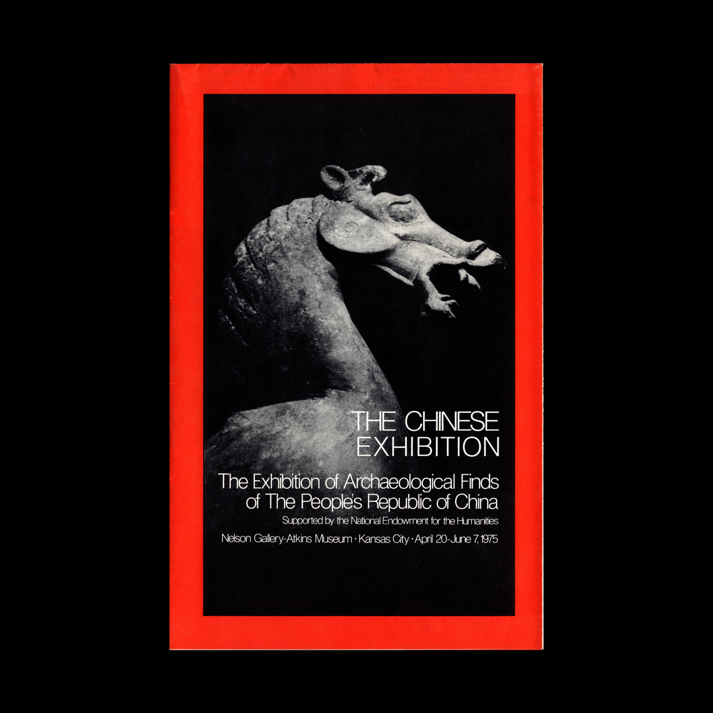
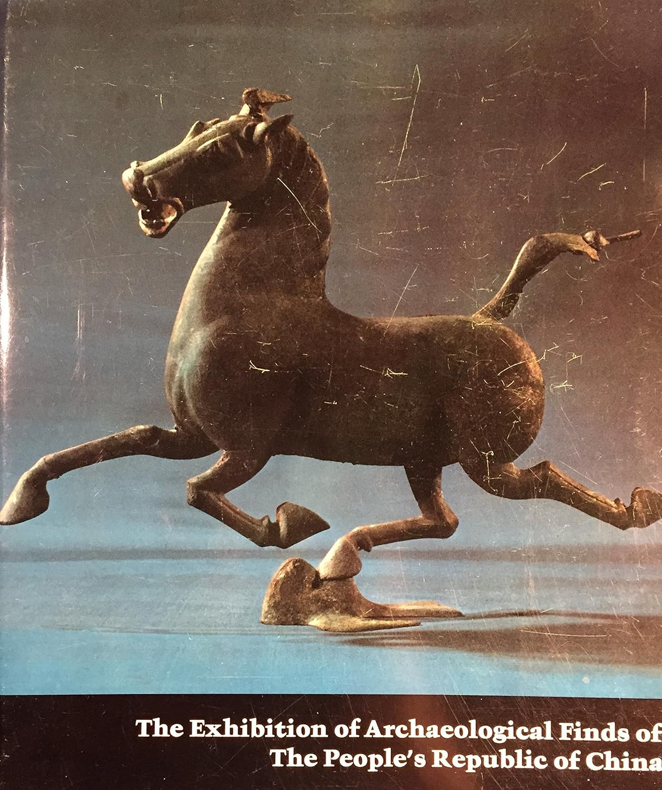
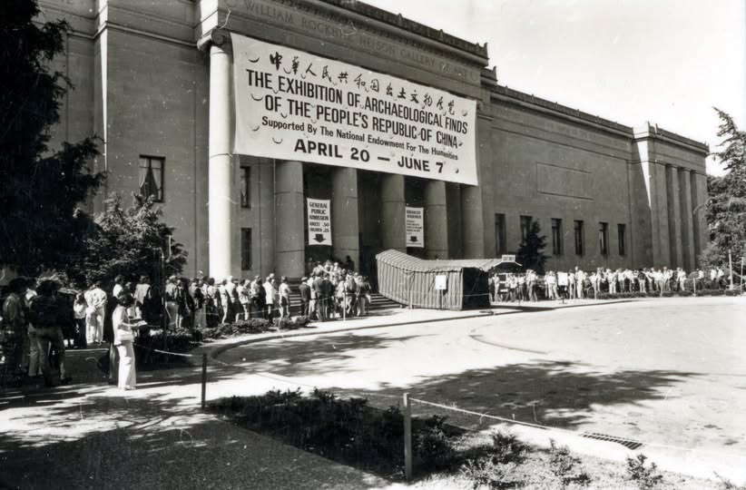
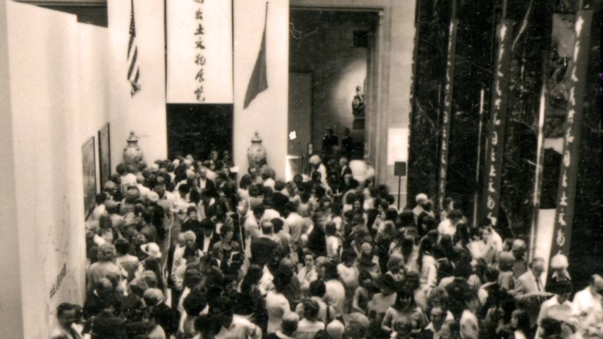
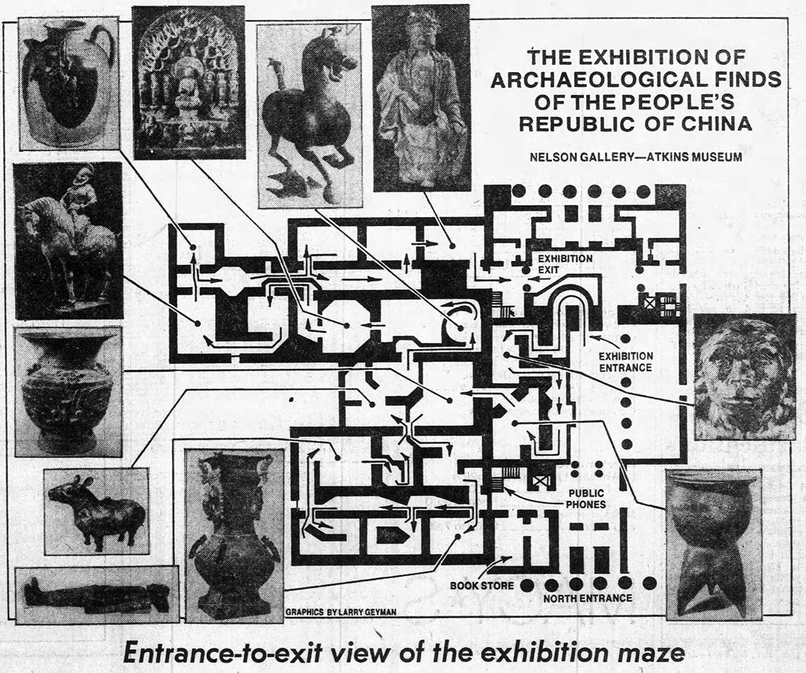
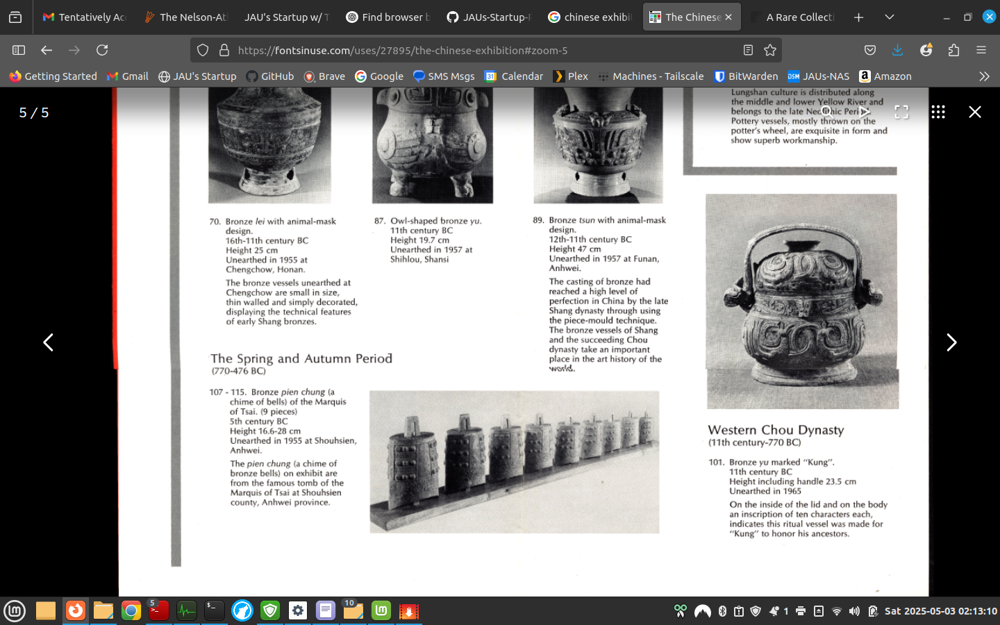
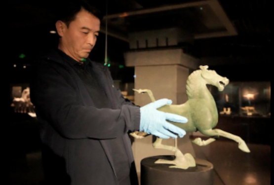
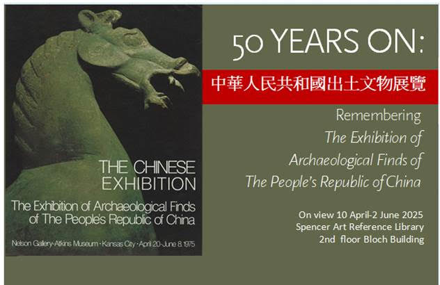

Recollections of the Exhibition of Archaeological Finds of the People's Republic of China, Nelson Gallery-Atkins Museum, 1975
In the spring of 1975, I was a twenty-something economics student at the University of Missouri–Kansas City, living with my wife in an apartment on Rockhill Road, two blocks north of one of the finest art museums in the country. The Nelson Gallery-Atkins Museum was just a short walk from our door — I passed it every day on my way to classes. We enjoyed living next door to a museum of this stature. When word came in early 1975 that an international exhibition would soon open at the Nelson-Atkins, we had no idea how fortunate we were — to find ourselves two blocks from a once-in-a-generation show, to witness a cultural event of historic significance, and to get a chance to work behind the scenes at the Nelson-Atkins.
That spring, the Nelson Gallery became the second American stop for The Exhibition of Archaeological Finds of the People’s Republic of China — a sweeping, landmark show of cultural treasures from the East. After opening in Paris, the exhibit traveled to London, Vienna, Stockholm and Toronto before reaching Washington. Kansas City prepared for a seven-week engagement, and in the weeks leading up, the anticipation steadily grew.
The collection arrived in early April 1975, in the midst of the Cold War and at a moment when official US policy toward China began to pivot. Americans were curious and intrigued by a civilization that had been, for a generation, mostly invisible to Western eyes. The ancient artifacts, jade ornaments, silk textiles, and bronze sculptures were not merely beautiful objects — they were dispatches from another world, arriving at a moment when the distance between worlds was, for the first time in decades, beginning to close.
Word spread around the UMKC campus that the Nelson sought extra staff for the Exhibition. I jumped at the chance to work at the Museum around the corner, rushed to fill out an application, and got an interview within a few days.
When I arrived, a dignified, nicely dressed woman greeted me. She looked me over with calm, appraising eyes and said simply: follow me. For the next two hours, she conducted an interview while we did light gardening on the south side of the Museum — deadheading flowers, pulling the occasional weed, moving through the well-maintained garden at an unhurried pace while she asked her questions. The interview ranks as the most unusual I have ever had, before or since.
She seemed pleasant but measured as she asked me the typical interview questions in this atypical setting. At one point she stopped, turned to me, and said plainly: You know, this is not just another after-hours janitorial job. This is the Chinese Exhibit at the Nelson-Atkins. I nodded and thought, good. I didn’t want a janitorial job — I wanted to work inside this museum.
She had read through my application and noted that I had some interior painting experience from summer jobs. She explained that touch-up painting of the exhibit walls would be part of the work — and then asked me a question I never expected: Did I know how to paint with a dry brush?
I responded I had been taught: never paint with a dry brush. A dry brush leaves streaks and misses.
She nodded as if she had expected that answer. Then she explained. The exhibit walls needed to look perfect when the doors opened each morning, but the large number of visitors were leaving marks, smudges and fingerprints. Normal cleaning solutions did more harm than good. Paint was needed to cover the traffic marks, but it needed to be fully dry before the first visitors arrived. The dry brush technique required a deliberate and precise touch — with barely any paint on the brush, just enough to cover a smudge or a fingerprint, working carefully into the surface so that it dried quickly and left no trace of having been applied at all. The goal: invisibility and restoration.
I said, I could do that. She seemed satisfied. I had the job. I would report at 9 p.m. the next evening and work 9 p.m. to 6 a.m. — the graveyard shift. I joined a small team that moved through the temporary galleries after closing, removing smudges from the gallery walls, touching up scuff marks, restoring the exhibit space before the next day’s crowds arrived. The supervisor’s instructions were clear: take your time, don’t rush, keep your brush dry, err on the side of too little rather than too much paint. And then, with particular emphasis: do not — under any circumstances — spill paint on the red carpet. The walls could be touched up. The carpet could not.
The complete transformation of the Museum for the Exhibit was a sight to behold. The moment you stepped through the front doors, you were somewhere else entirely. Temporary exhibit walls carved the grand interior into a new series of smaller galleries connected like a maze. The galleries were painted in a warm salmon color with deep red carpet underfoot — together creating something wholly transportive, a world apart from the majestic marble and neutral tones of the familiar Nelson-Atkins. Completing the journey: the sounds of Chinese bronze bells — deep, resonant, otherworldly tones playing on a continuous loop, 24/7, throughout the entire Exhibit.
During the day, with galleries full of visitors, the bells accompanied the murmur of voices and the shuffle of feet to create a unique and captivating experience. But in the quiet hours of the night shift, the sounds were something else altogether.
Alone in the galleries in the wee hours of the morning, brushing out fingerprints while ancient bronzes caught the soft exhibition lighting and the bells rang on, the effect was not transcendence so much as a quiet faraway awareness. The artifacts felt more present, more enduring. A bronze vessel cast thousands of years before did not require my admiration to be remarkable. It simply was what it was, patient and indifferent, outlasting dynasties and oceans and whatever small concerns occupied an economics student working the night shift.
The best part — the part that made the graveyard shift worth more than the pay — was that I got to really see, really experience the Exhibit. The crown jewel was the Galloping Horse, a Han Dynasty bronze of breathtaking lightness and motion, a horse in full stride with one hoof balanced impossibly on the back of a swallow in flight. During public hours it drew such crowds that getting close proved no small feat, and if you managed it, you found yourself too near to take it in properly. You came away with a glimpse, a sliver of an impression.
But in the peaceful, solitary hours we worked, the Galloping Horse was ours. No crowds, no jockeying for position. As we moved between our assigned tasks restoring the Exhibit to its pristine state, we could take a moment. Stand back and let your eyes find the thing whole — the impossible balance of it, the sculptor’s artistic genius in rendering speed and weightlessness in bronze. You could move around it, approach slowly, step back again. You could simply look, for as long as you wanted, in silence broken only by the bells. That was the unexpected gift of those hours at the Museum.
Looking back on those seven weeks in the spring of 1975, I was probably too young to fully grasp the historical significance of what I was witnessing — but I sensed something extraordinary taking shape. The Exhibition marked a historic diplomatic moment, but equally important, it stood as living proof of how art brings people and nations together. Ancient artifacts had crossed the Pacific bearing four thousand years of civilization, arriving in the American heartland at a turning point in history. But at the end of my shift, I was still twenty-something with modest pay, and by six in the morning I was exhausted and mostly thinking about breakfast and sleep.
What I could not have known was how enduring those graveyard hours would prove to be. After more than fifty years, when I close my eyes and think back on those nights at the Museum, I can still hear the bronze bells echoing through the galleries and see the lithe, powerful figure of the Flying Horse of Gansu, and I am forever grateful for the memories the Nelson-Atkins Museum of Art gave me that spring of 1975.
This essay was inspired in part by the Nelson-Atkins Museum of Art’s “50 Years On: Remembering The Exhibition of the Archaeological Finds of the People’s Republic of China” program, held May 4, 2025, which the author attended. The author wishes to thank Tara Laver, Senior Archivist at the Nelson-Atkins Museum of Art, and all the staff archivists who put together the program and provided archival materials for this piece.








Audio recording of Chinese bells similar to what was played at the Exhibit [courtesy of the Smithsonian Museum]
Video footage of visitors at the exhibit, including a delegation from Denver Museum of Nature and Science. [courtesy of Denver Museum of Nature & Science, IV.MOV-703-3]
This essay was inspired in part by the Nelson-Atkins Museum of Art's “50 Years On: Remembering The Exhibition of the Archaeological Finds of the People's Republic of China” program, held May 4, 2025, which the author attended. The author wishes to thank Tara Laver, Senior Archivist at the Nelson-Atkins Museum of Art, and all the staff archivists who put together the program and provided archival materials for this piece.